Genomic PCA
Anna Elisabeth Furtjes
King’s College London
26/08/2021
\[\\[0.1in]\]
Background and reasoning
Available data: In the following analysis, we use freely available genome-wide association study (GWAS) summary statistics from Linner et al. (2019) on risky behaviors . In this study, the authors performed GWAS on the propensity to speeding, alcohol consumption, smoking, and the number of self-reported sexual partners. In addition to the four traits, they extracted the first principal component (PC) of these four traits in a principal component analysis (PCA), and performed a GWAS on this first PC to create a summary of overall risky behaviors. The summary statistics are available on https://www.thessgac.org/data . The GWAS summary statistics for ever smoking status were derived from UKB as well as TAG, whereas all the others (including the PC sumstats) were obtained from UKB only.
Aim of the analysis: Using Linner’s summary statistics of speeding, drinking, smoking and sexual partners, we will perform linkage disequilibirum score regression (LDSC) and obtain the genetic correlation matrix from the four risky behaviors in Linner et al. (2019). Using PCA, we will extract the first PC from this genetic correlation matrix. Resulting standardised PC loadings will be used to weight SNP effects (z-scores) contributed by the four risky behaviors. We have modified the R package provided by Baselman et al. (2019) to create our genetic PC sumstats while allowing to correct for sample overlap.
Validation of the resulting genetic PC sumstats:
To validate the results, we will compare SNP effects from Linner’s phenotypic PC GWAS with effect sizes extracted in our analysis. A perfect correlation between our genetic PC sumstats that we created using summary statistics only (called genetic PCA in this document) and the PC sumstats would indicate that we captured the same effects as Linner et al. obtained in their PCA with phenotypic data. Validating the resulting genetic PC sumstats serves as a sanity check and is crucial as, to our knowledge, this kind of approach is unprecedented.
\[\\[0.01in]\]
Procedure
A. Obtain genetic correlation matrix
After downloading the summary statistics, we use the genomic SEM package in R to pre-process and munge the files (Grotzinger et al., 2019). We perform LDSC to obtain a genetic correlation matrix.
Step 1: Prepare and munge files
library(data.table)
library(devtools)
library(GenomicSEM)
library(knitr)
library(psych)
# set work directory to where raw GWAS are stored
setwd(paste0(getwd(),"/GWAS_raw"))
# list all files in this directory, only first four are the risky behaviors
gwas_files<-list.files()
gwas_files<-gwas_files[1:4]
#load all files listed in gwas_files
for (i in 1:length(gwas_files)) assign(gwas_files[i],fread(gwas_files[i],header=T,data.table=F))
# double check which files were loaded in
ls(pattern=".txt")
# change column names &
# set wd to the directory the files with the new names should be saved
setwd(paste0(getwd(),"/GWAS_header"))
for(i in gwas_files){
file<-get(i)
print(dim(file))
print(head(file))
names(file)<-c("SNP","CHR","POS","A1","A2","eaf_A1","beta","se","p")
print(head(file))
fwrite(file,file=i, quote=FALSE,col.names=TRUE,row.names=F,sep=" ")
}
#################
## munge
#################
files<-gwas_files
# as reference SNP list use 1000G reference genome (HapMap 3)
# wget https://data.broadinstitute.org/alkesgroup/LDSCORE/w_hm3.snplist.bz2
hm3<-"w_hm3.noMHC.snplist.txt"
trait.names<-c("speeding","drinking","smoking","sexual_partners")
N<-c(404291,414343,518633,370711)
munge(files=files,
hm3=hm3,
trait.names = trait.names,
N=N)Step 2: Perform linkage disequilibrium score regression (LDSC)
# download and unpack SNP weights:
# wget https://data.broadinstitute.org/alkesgroup/LDSCORE/eur_w_ld_chr.tar.bz2
# tar -jxvf eur_w_ld_chr.tar.bz2
# download software to unzip .tar document on windows
##############################################################
# setwd to munged files
setwd(paste0(getwd(),"/GWAS_munged"))
library(stringr)
# specifications for ldsc function
traits<-c("speeding.sumstats.gz","drinking.sumstats.gz","smoking.sumstats.gz","sexual_partners.sumstats.gz")
ld<- "eur_w_ld_chr/"
wld<- "eur_w_ld_chr/"
trait.names<-str_remove(traits, pattern = ".sumstats.gz")
sample.prev<-c(NA,NA,.59,NA)
# https://bmjopen.bmj.com/content/4/12/e005663
# this paper says that 50% of population had never smoked (but they use UKB ...?)
# difficult to find papers on ever smoked rather than regular smokers
population.prev<-c(NA,NA,.5,NA)
LDSCoutput_risk_taking<-ldsc(traits=traits,
sample.prev=sample.prev,
population.prev=population.prev,
ld=ld,wld=wld,
trait.names = trait.names,
stand = T)
#LDSCoutput_risk_taking$S is going to be the covariance matrix
#LDSCoutput_risk_taking$V is the sampling covariance matrix as expected by Lavaan
save(LDSCoutput_risk_taking, file="risk_taking_stand.RData")Step 3: Display genetic correlation matrix
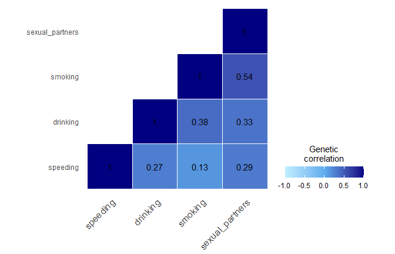
Sanity check:
To validate our correlation matrix, we contacted Linner et al. (2019) who shared their LDSC results: They found very similar genetic correlations between the four risky behaviors using LDSC and we suggest that our pre-processing was successful.

LDSC intercepts
LDSC intercepts quantify sample overlap and other confounding factors (such as phenotypic correlation and population stratification) between the four risky behaviors we are analysing here.
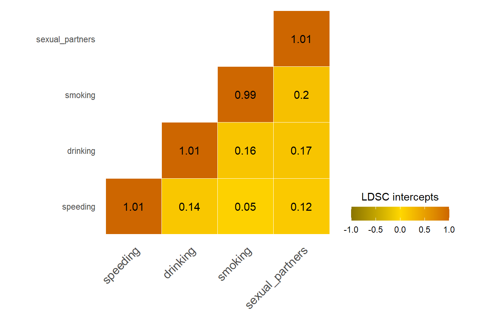
B. Principal Component Analysis
Eigen decomposition
We perform eigen decomposition on the correlation matrix using the eigen function. We aim to obtain standardised loadings of the four risky behaviors on the first PC, by standardising the eigenvectors of the first PC with their corresponding eigenvalue.
Eigenvectors
#extract eigenvectors and eigenvalues
eigenvectors<-round(eigen(cormatrix)$vectors,digits=3)\[\begin{bmatrix} 0.37&0.853&0.249&-0.27 \\ 0.498&0.094&-0.837&0.206 \\ 0.544&-0.481&0.102&-0.68 \\ 0.565&-0.179&0.476&0.65 \\ \end{bmatrix}\]
Eigenvalues and explained variance
eigenvalues<-round(eigen(cormatrix)$values,digits = 3)
explained_variance<-round(eigenvalues/sum(eigenvalues)*100,digits = 3)
library(knitr)
values<-cbind(c("1st PC","2nd PC","3rd PC","4th PC"),eigenvalues,explained_variance)
kable(values, caption="Eigenvalues and explained variance (%)", col.names = c("PC","Eigenvalues","Explained variance"))| PC | Eigenvalues | Explained variance |
|---|---|---|
| 1st PC | 1.996 | 49.888 |
| 2nd PC | 0.897 | 22.419 |
| 3rd PC | 0.685 | 17.121 |
| 4th PC | 0.423 | 10.572 |
Standardised PC loadings
We standardise the eigenvectors with the eigenvalues, in order to obtain standardised PC loadings.
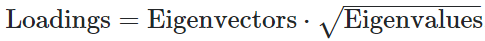
The PC loadings from our genetic correlation matrix are: \[\begin{bmatrix} 0.523&0.808&0.206&-0.176 \\ 0.704&0.089&-0.693&0.134 \\ 0.769&-0.456&0.084&-0.442 \\ 0.798&-0.17&0.394&0.423 \\ \end{bmatrix}\]
C. Create genetic PC sumstats
We format the files as expected by the multivariate_GWAMA() function by Baselman et al. (2019). It expects exactly nine columns (SNPID,CHR,BP,EA,OA,EAF,N,Z,P) and that effect sizes must be z scores. We modified the function from Baselman et al. as displayed below in order to create our genetic PC sumstats.
Step 1: Format the risky behaviors sumstats
source("https://github.com/baselmans/multivariate_GWAMA/blob/master/Test_Data/N_weighted_GWAMA.function.1_2_6.R?raw=TRUE")
library(data.table)
setwd(paste0(getwd(),"/GWAS_header"))
# read in gwas files
gwas_files<-list.files()
gwas_files<-gwas_files[1:4]
for (i in 1:length(gwas_files)) assign(gwas_files[i],fread(gwas_files[i],header=T,data.table=F))
ls(pattern=".txt")
# generate N column
AUTOMOBILE_SPEEDING_PROPENSITY_GWAS.txt$N<-404291
DRINKS_PER_WEEK_GWAS.txt$N<-414343
EVER_SMOKER_GWAS_MA_UKB_TAG.txt$N<-518633
NUMBER_SEXUAL_PARTNERS_GWAS.txt$N<-370711
# the following loop does:
# restrict file to HapMap SNPs contained in munged GWAS (but make sure EAF taken from reference file is correct by comparing EA in ref and munged files)
# transform beta into z-scores
# z-score=beta/stand_error # https://www.biostars.org/p/140292/
# re-name columns and include only the 9 columns needed by the function
# list reference files that contain info on BP, CHR and P (that the munged files don't contain)
setwd(paste0(getwd(),"/GWAS_header"))
ref_files<-list.files()[1:4]
all_files <- data.frame(ref_files, munged_files = c("speeding.sumstats.gz","drinking.sumstats.gz","smoking.sumstats.gz","sexual_partners.sumstats.gz"))
for(i in 1:nrow(all_files)){
# read in munged file
setwd(paste0(getwd(),"/GWAS_munged"))
munged_file<-fread(as.character(all_files$munged_files[i]),header=T,data.table=F)
# read in ref file
setwd(paste0(getwd(),"/GWAS_header"))
ref_file<-fread(as.character(all_files$ref_files[i]),header=T,data.table=F)
# format ref file
names(ref_file)[which(names(ref_file)=="POS")]<-"BP"
names(ref_file)[which(names(ref_file)=="eaf_A1")]<-"EAF_A1_prelim"
names(ref_file)[which(names(ref_file)=="p")]<-"P"
# A1 is the effect allele according to Linner website
names(ref_file)[which(names(ref_file)=="A1")]<-"EA"
names(ref_file)[which(names(ref_file)=="A2")]<-"OA"
# only keep relevant columns from the reference file
ref_file<-ref_file[,c("BP","CHR","SNP","P","EA","EAF_A1_prelim")]
# merge munged and ref file
merged_file<-merge(munged_file, ref_file, by=c("SNP"), all.x=T)
# create an effect allele frequency column that matches the allele used in the munged file (because we take the frequency from the reference file that might have flipped effect and other alleles)
merged_file$EAF<-ifelse(merged_file$A1 == merged_file$EA, merged_file$EAF_A1_prelim, 1-merged_file$EAF_A1_prelim)
# only keep required columns
names(merged_file)[which(names(merged_file) == "SNP")]<-"SNPID"
merged_file<-merged_file[,c("SNPID","CHR","BP","A1","A2","EAF","N","Z","P")]
# name according to GWAMA expectations
# In genomicSEM A1 is the effect allele
names(merged_file)[which(names(merged_file) == "A1")]<-"EA"
names(merged_file)[which(names(merged_file) == "A2")]<-"OA"
# save formatted files
setwd(paste0(getwd(),"/GWAMA_format"))
ref_trait <- as.character(all_files$ref_files[i])
fwrite(merged_file,file=paste0("gwama_",ref_trait), quote=FALSE,col.names=TRUE,row.names=F,sep=" ",na="NA")
}Step 2: Modify GWAMA function
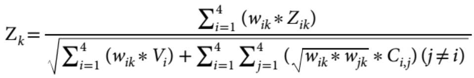
Baselman et al. (2019) implemeted the equation above. We replace the weights in their equation, the square root of N times the heritability, with standardised PC loadings times the square root of N:
Change w = sqrt(N*h2)to w = sqrt(N)*standardised_loadings
If we only replace heritabilities with standardised loadings in the arguments of the function, we will get errors for two reasons:
It won’t allow negative loadings (because we are replacing h2 with potentially negative PC loadings and negative heritability wouldn’t make sense)
It won’t allow to calculate our weights, as there is no sqrt() of a negative value:
sqrt(-number)=NaN
I have made the following changes to address these problems:
1) Disable sanity check for negative heritabilites:
source("https://github.com/baselmans/multivariate_GWAMA/blob/master/Test_Data/N_weighted_GWAMA.function.1_2_6.R?raw=TRUE")
my_GWAMA<-multivariate_GWAMA
trace(my_GWAMA,edit=T)I deleted lines 217-221, which disables the sanity check to stop the function from running when loadings are not in the expected h2 format (h2<0 & h2>1).
2) Modify code to calculate our weights
Original code:
# line 663
W<-t(t(N) * h2)
# line 665
sqrt_W<-sqrt(W)As we replace h2 with negative loadings, this code produces NaNs.
Modified code:
w = t(t(sqrt(N))*h2)
sqrt_W<-wStep 3: Run modified function
# load dependencies
source("https://github.com/baselmans/multivariate_GWAMA/blob/master/Test_Data/N_weighted_GWAMA.function.1_2_6.R?raw=TRUE")
library(data.table)
library(stringr)
setwd(paste0(substring(getwd(), first = 1, last = 18),"Documents/GitHub/genomicPCA/scripts"))
source("my_GWAMA_26032020.R")
# Make an empty list with length equal to the number of input files
dat<-vector("list")
setwd(paste0(getwd(),"/GWAMA_format"))
gwama_files<-list.files(pattern = "gwama_")
all_files<-as.data.frame(cbind(gwama_files, file_names = c("speeding","drinking","smoking","sexual_partners")))
# Read in the data
n<-0
for(file in 1:nrow(all_files)){
n<-n+1
print(n)
dat[[all_files$file_names[n]]]<-fread(all_files$gwama_files[n],data.table = F)
}
# load covariance matrix from LDSC
setwd(paste0(substring(getwd(), first = 1, last = 18),"Documents/GitHub/genomicPCA/data"))
load("risk_taking_stand.RData")
# select the matrix of LDSC intercepts
# this matrix should be in the same order as data read into dat but I have added some code to specifically make sure they take the same order
order<-names(dat)
dimnames(LDSCoutput_risk_taking$I)[[1]]<-dimnames(LDSCoutput_risk_taking$S)[[2]]
dimnames(LDSCoutput_risk_taking$I)[[2]]<-dimnames(LDSCoutput_risk_taking$S)[[2]]
CTI<-as.matrix(LDSCoutput_risk_taking$I[order,order])
# load correlation matrix
dimnames(LDSCoutput_risk_taking$S_Stand)[[1]]<-dimnames(LDSCoutput_risk_taking$S)[[2]]
dimnames(LDSCoutput_risk_taking$S_Stand)[[2]]<-dimnames(LDSCoutput_risk_taking$S)[[2]]
cormatrix<-LDSCoutput_risk_taking$S_Stand[order,order]
# eigen decomposition
eigenvectors<-eigen(cormatrix)$vectors
eigenvalues<-eigen(cormatrix)$values
# calculate standardised loadings
loadings<-as.vector(eigenvectors%*%sqrt(diag(eigenvalues))[,1])
# run my modified GWAMA function
setwd(paste0(getwd(),"/Evaluate_GWAMA"))
my_GWAMA(x=dat,
cov_Z=CTI,
h2=loadings,
out=".",
name="my_GWAMA_weights_26082021",
output_gz=F,
check_columns=F)Running the function can take a while. It will create one file containing the genetic PC summary stats and a log file to keep track of operations.
For example, the log file shows the number of total and significant SNPs:
“2,529 SNPs reached genome-wide significance (Minimum P-value: 9.4467e-41)”
“Successfully created summary statistics for 1,198,974 SNPs”
The function does not test for significance. It only counts the number of SNP’s below a certain p-value threshold. The default threshold used here is p < 5e-08, but can be changed by the user.
Evaluate results
We chose to evaluate our genetic PC summary statistics using data from Linner et al. (2019) because they provide GWAS on a first phenotypic PC derived from the four GWAS phenotypes. We use their phenotypic PC sumstats as a reference for how well our genetic PC represents a summary of SNP effects contributed by the four risky behaviors: speeding, drinking, smoking and sexual partners. If our genetic PC summary statistics highly correlate with the phenotypic PC sumstats by Linner, we can be confident that our genetic PC extracted purely based on GWAS sumstats is capturing the same SNP effects as GWAS sumstats calculated for a phenotypic PC.
We will perform genetic correlations between our genetic PC sumstats, the phenotypic PC sumstats and the four risky behaviors summary stats. We will also plot z statistics contained in our genetic PC sumstats against those contained in the other summary statistics and calculate their correlations.
It is important to note that the directions indicated by the PC loadings are arbitrary and it would not change the signal contained in the statistics if we flipped the signs of the loadings as long as this is done consistently across all PC loadings. If negative PC loadings are obtained, one can weight the SNPs with negative PC loadings, but we suggest to scale the SNP effects in the most sensible direction to make results more intuitively interpretable.
Prepare and munge sumstats for LDSC
# set work directory to where raw GWAS are stored
setwd(paste0(getwd(),"/GWAS_raw"))
# store file name in gwas_file
gwas_file<-list.files(pattern="RISK_PC")
# load into R
Risk_PC<-fread(gwas_file,header=T,data.table = F)
# rename columns
names(Risk_PC)<-c("SNP","CHR","POS","A1","A2","eaf_A1","beta","se","p")
# and set wd to the directory I want to save the files with the new names
setwd(paste0(getwd(),"/Evaluate_GWAMA"))
# write table
fwrite(Risk_PC,file="Risk_PC_GWAS.txt", quote=FALSE,col.names=TRUE,row.names=F,sep=" ")
# prepare GWAMA file #
# set work directory to where GWAMA file is stored
setwd(paste0(getwd(),"/Evaluate_GWAMA"))
# store file name in gwas_file
gwas_file<-list.files(pattern="weighted_GWAMA.results.txt")
# load into R
GWAMA<-fread(gwas_file,header=T,data.table = F)
# rename columns (rename N_eff into N so that GenomicSEM recognises it as N column)
names(GWAMA)[which(names(GWAMA)=="N_eff")]<-"N"
GWAMA<-GWAMA[,c("SNPID","CHR","BP","EA","OA","EAF","MAF","N","BETA","SE","Z","p")]
# setwd to where you want to save GWAMA
setwd(paste0(getwd(),"/Evaluate_GWAMA"))
# write table
fwrite(GWAMA,file="GWAMA_header.txt", quote=FALSE,col.names=TRUE,row.names=F,sep=" ",na="NA")
# munge PC and GWAMA files ##
#load dependencies for genomic SEM
library(devtools)
library(GenomicSEM)
files<-c("Risk_PC_GWAS.txt","GWAMA_header.txt")
# use 1000G reference genome (HapMap 3)
# wget https://data.broadinstitute.org/alkesgroup/LDSCORE/w_hm3.snplist.bz2
hm3<-paste0(getwd(),"/GWAS_header/w_hm3.noMHC.snplist.txt")
trait.names<-c("Risk_PC","GWAMA")
N<-c(315894,NA)
munge(files=files,
hm3=hm3,
trait.names = trait.names,
N=N)Perform LDSC
setwd(paste0(getwd(),"/GWAS_munged"))
traits<-c("speeding.sumstats.gz","drinking.sumstats.gz","smoking.sumstats.gz","sexual_partners.sumstats.gz",paste0(getwd(),"/Evaluate_GWAMA/Risk_PC.sumstats.gz"),paste0(getwd(),"/Evaluate_GWAMA/GenomicPCA.sumstats.gz"))
ld<- "eur_w_ld_chr/"
wld<- "eur_w_ld_chr/"
trait.names<-c("speeding","drinking","smoking","sexual_partners","phenotypicPC","genomicPC")
sample.prev<-c(NA,NA,.59,NA,NA,NA)
population.prev<-c(NA,NA,.5,NA,NA,NA)
LDSCoutput_evaluate_GWAMA<-ldsc(traits=traits,
sample.prev=sample.prev,
population.prev=population.prev,
ld=ld,wld=wld,
trait.names = trait.names, stand = T)
setwd(paste0(getwd(),"/Evaluate_GWAMA"))
save(LDSCoutput_evaluate_GWAMA, file="Evaluate_GWAMA.RData")Display genetic correlations
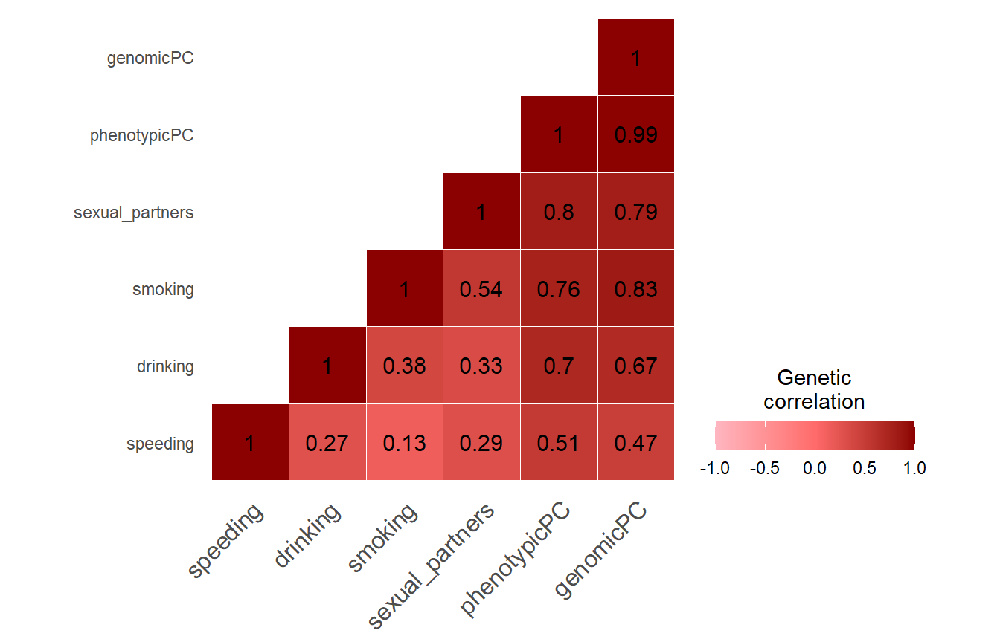
Note the strong genetic correlation between our genomic PCA sumstats and the phenotypic PC sumstats. It suggests that we extract the same SNP effects from GWAS summary statistics only as was captured by Linner when extracting a phenotypic PC and calculating GWAS sumstats for it.
Display LDSC intercepts
LDSC intercepts capture sample overlap, among other confounding factors. We would expect traits compared with themselves to have a perfect sample overlap (1 or very close to 1). When comparing our genetic PC sumstats with the four risky behaviors sumstats, we expect substantial sample overlap as all four have contributed to our genetic PC. In theory, our genetic PC and the phenotypic PC by Linner capture the same signal, we expect an even stronger sample overlap between these two traits.
setwd(paste0(substring(getwd(), first = 1, last = 18),"Documents/GitHub/genomicPCA/data"))
load("Evaluate_GWAMA.RData")
dimnames(LDSCoutput_evaluate_GWAMA$I)[[1]]<-dimnames(LDSCoutput_evaluate_GWAMA$S)[[2]]
dimnames(LDSCoutput_evaluate_GWAMA$I)[[2]]<-dimnames(LDSCoutput_evaluate_GWAMA$S)[[2]]
intercepts<-data.matrix(round(LDSCoutput_evaluate_GWAMA$I,digits = 2))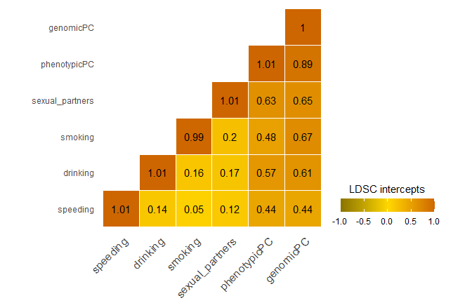
Comparison of our genetic PC sumstats with other traits
In the following plots, the blue line indicates the central correlation line and the red line is the line of identity with an intercept of 1 and a slope of -1: x=y.
Our genetic PC sumstats vs. Linner’s phenotypic PC sumstats
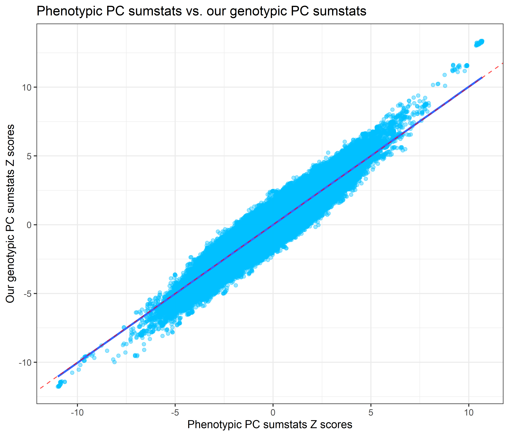
Our genetic PC sumstats vs. speeding sumstats
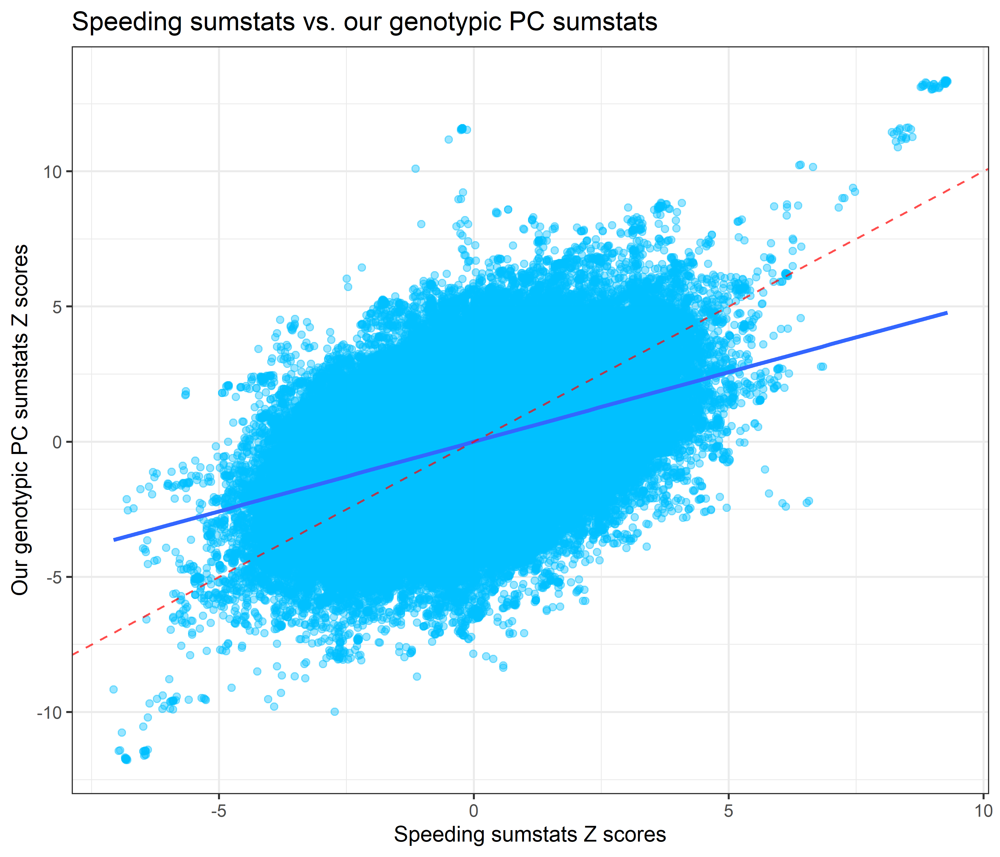
Our genetic PC sumstats vs. drinking sumstats
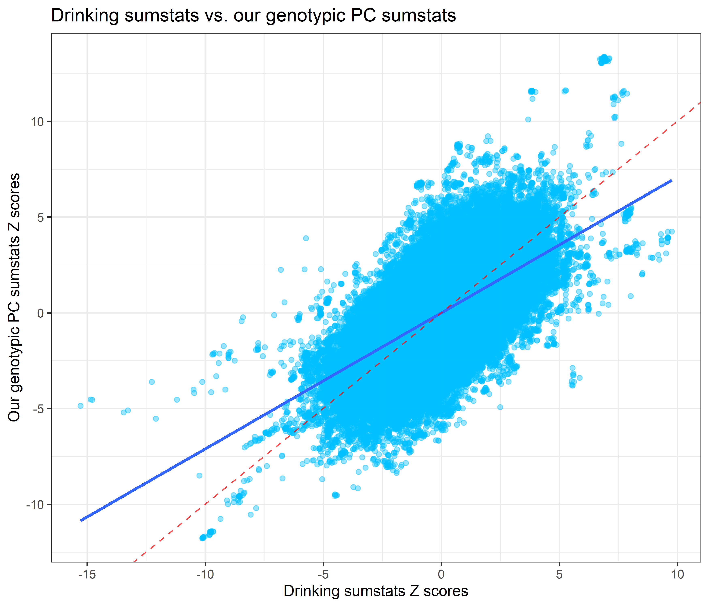
Our genetic PC sumstats vs. smoking sumstats
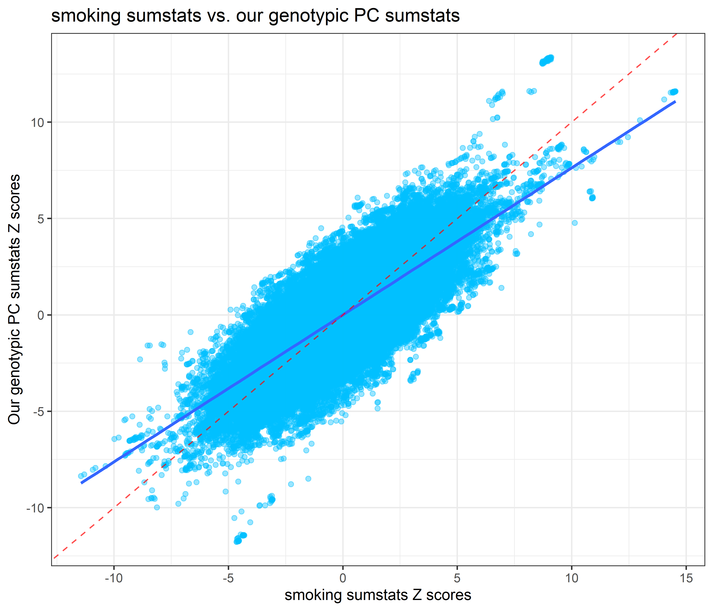
Our genetic PC sumstats vs. sexual partners sumstats
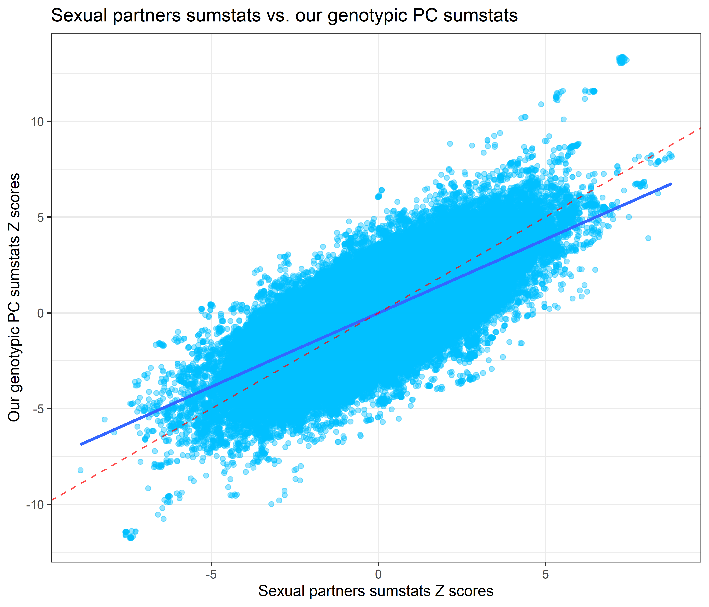
Alternative procedure
For comparison, we also calculated genetic PC sumstats using a covariance matrix obtained through LDSC, instead of a correlation matrix. We run the same code as displayed above (Step 3: Run GWAMA with modified function), but replacing the standardised genetic correlation matrix with the unstandardised matrix.
Genetic PC sumstats extracted from covariance matrix
# load dependencies
source("https://github.com/baselmans/multivariate_GWAMA/blob/master/Test_Data/N_weighted_GWAMA.function.1_2_6.R?raw=TRUE")
library(data.table)
library(stringr)
setwd(paste0(substring(getwd(), first = 1, last = 18),"Documents/GitHub/genomicPCA/scripts"))
source("my_GWAMA_26032020.R")
# Make an empty list with length equal to the number of input files
dat<-vector("list")
setwd(paste0(getwd(),"/GWAMA_format"))
gwama_files<-list.files(pattern = "gwama_")
all_files<-as.data.frame(cbind(gwama_files, file_names = c("speeding","drinking","smoking","sexual_partners")))
# Read in the data
n<-0
for(file in 1:nrow(all_files)){
n<-n+1
print(n)
dat[[all_files$file_names[n]]]<-fread(all_files$gwama_files[n],data.table = F)
}
# load covariance matrix from LDSC
setwd(paste0(substring(getwd(), first = 1, last = 18),"Documents/GitHub/genomicPCA/data"))
load("risk_taking_stand.RData")
# select the matrix of LDSC intercepts
# this matrix should be in the same order as data read into dat but I have added some code to specifically make sure they take the same order
order<-names(dat)
dimnames(LDSCoutput_risk_taking$I)[[1]]<-dimnames(LDSCoutput_risk_taking$S)[[2]]
dimnames(LDSCoutput_risk_taking$I)[[2]]<-dimnames(LDSCoutput_risk_taking$S)[[2]]
CTI<-as.matrix(LDSCoutput_risk_taking$I[order,order])
# load correlation matrix
dimnames(LDSCoutput_risk_taking$S)[[1]]<-dimnames(LDSCoutput_risk_taking$S)[[2]]
covmatrix<-LDSCoutput_risk_taking$S[order,order]
# eigen decomposition
eigenvectors<-eigen(covmatrix)$vectors
eigenvalues<-eigen(covmatrix)$values
# calculate standardised loadings
loadings<-as.vector(eigenvectors%*%sqrt(diag(eigenvalues))[,1])
# multiply the loadings with -1 if the median value of the loadings is below 0
# this achieves a more intuitive interpretation but doesn't change the results - the signal is the same even when we multiple it with -1
median_loadings<-median(loadings)
mean_direction<-sign(median_loadings)
if(mean_direction == -1){
loadings<-loadings*(-1)
} else {
loadings<-loadings}
# run my modified GWAMA function
setwd(paste0(getwd(),"/Evaluate_GWAMA"))
my_GWAMA(x=dat,
cov_Z=CTI,
h2=loadings,
out=".",
name="my_GWAMA_covmatrix_26082021",
output_gz=F,
check_columns=F)Munge and format files
# prepare GWAMA file #
# set work directory to where GWAMA file is stored
setwd(paste0(getwd(),"/Evaluate_GWAMA"))
# store file name in object called file
file<-list.files(pattern="covmatrix_26082021.N_weighted_GWAMA.results")
# load into R
library(data.table)
GWAMA<-fread(file,header=T,data.table = F)
# rename columns (rename N_eff into N so that GenomicSEM recognises it as N column)
names(GWAMA)[which(names(GWAMA)=="N_eff")]<-"N"
names(GWAMA)[which(names(GWAMA)=="PVAL")]<-"P"
GWAMA<-GWAMA[,c("SNPID","CHR","BP","EA","OA","EAF","MAF","N","BETA","SE","Z","P")]
# setwd to where you want to save GWAMA
setwd(paste0(getwd(),"/Evaluate_GWAMA"))
# write table
fwrite(GWAMA,file="GWAMA_cov_header.txt", quote=FALSE,col.names=TRUE,row.names=F,sep=" ",na="NA")
#load dependencies for genomic SEM
library(devtools)
library(GenomicSEM)
files<-"GWAMA_cov_header.txt"
# use 1000G reference genome (HapMap 3)
# wget https://data.broadinstitute.org/alkesgroup/LDSCORE/w_hm3.snplist.bz2
hm3<-paste0(getwd(),"/GWAS_header/w_hm3.noMHC.snplist.txt")
trait.names<-"GenomicPCA_cov"
N<-NA
munge(files=files,
hm3=hm3,
trait.names = trait.names,
N=N)Calculate LDSC
setwd(paste0(getwd(),"/GWAS_munged"))
traits<-c("speeding.sumstats.gz","drinking.sumstats.gz","smoking.sumstats.gz","sexual_partners.sumstats.gz",paste0(getwd(),"/Evaluate_GWAMA/Risk_PC.sumstats.gz"),paste0(getwd(),"/Evaluate_GWAMA/GenomicPCA_cov.sumstats.gz"))
ld<- "eur_w_ld_chr/"
wld<- "eur_w_ld_chr/"
trait.names<-c("speeding","drinking","smoking","sexual_partners","phenotypicPC","genomicPC")
sample.prev<-c(NA,NA,.59,NA,NA,NA)
population.prev<-c(NA,NA,.5,NA,NA,NA)
LDSCoutput_evaluate_GWAMA<-ldsc(traits=traits,
sample.prev=sample.prev,
population.prev=population.prev,
ld=ld,wld=wld,
trait.names = trait.names, stand = T)
setwd(paste0(getwd(),"/Evaluate_GWAMA"))
save(LDSCoutput_evaluate_GWAMA, file="Evaluate_cov_GWAMA.RData")Heatmap
The resulting genetic PC sumstats weighted by PC loadings extracted from a covariance matrix index very similar signal as those extracted from a correlation matrix.
By using a covariance instead of a correlation matrix, the genetic correlation between our genotypic PC sumstats and the phenotypic PC sumstats slighly declined (rcor = 0.99 vs. rcov = -0.95), suggesting that using PC loadings from a correlation matrix to weigh the SNP-weights produced slightly more accurate results. The genetic correlation between our genotypic PC and individual risky behaviors also slightly shifted.
Compare our genetic PC sumstats to other traits
These genetic PC sumstats have been extracted from a covariance instead of a correlation matrix. In the following plots, the blue line indicates the central correlation line and the red line is the line of identity with an intercept of 1 and a slope of -1: x=-y.
Our genetic PC sumstats vs. Linner’s phenotypic PC sumstats
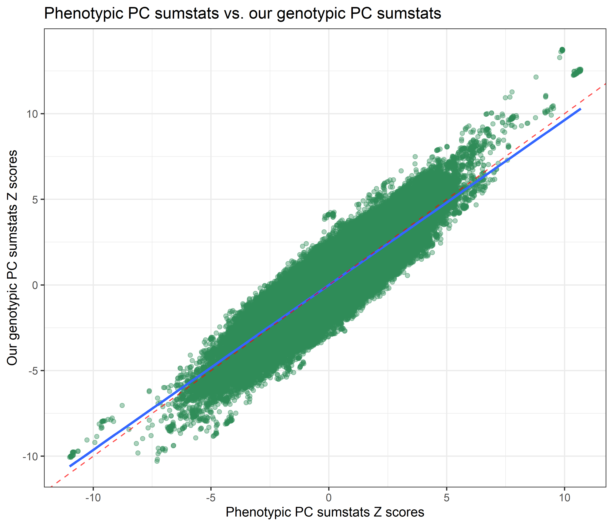
Our genetic PC sumstats vs. speeding sumstats
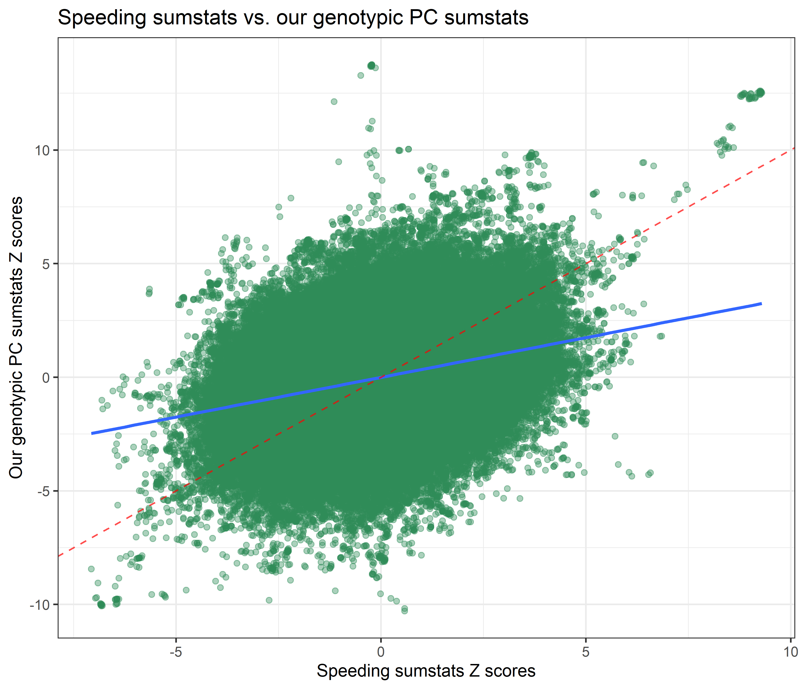
Our genetic PC sumstats vs. drinking sumstats
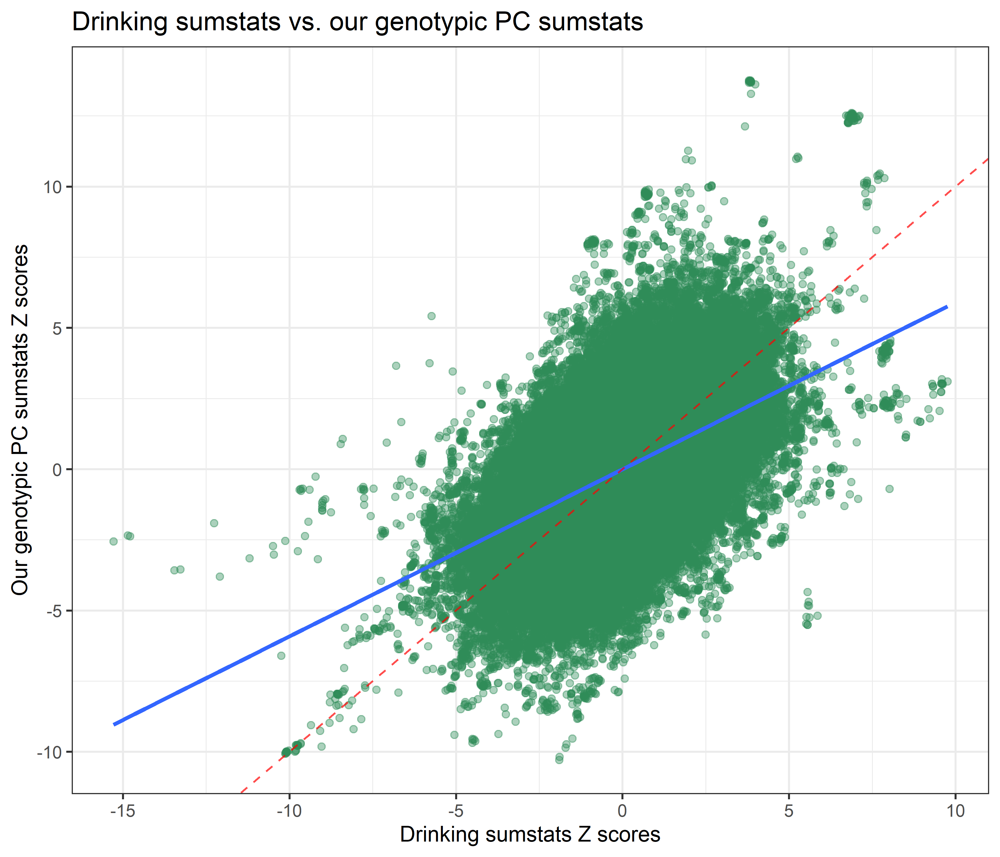
Our genetic PC sumstats vs. smoking sumstats
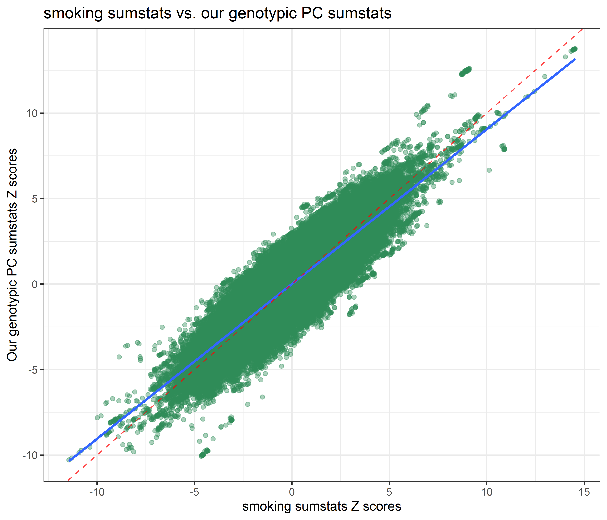
Our genetic PC sumstats vs. sexual partners sumstats
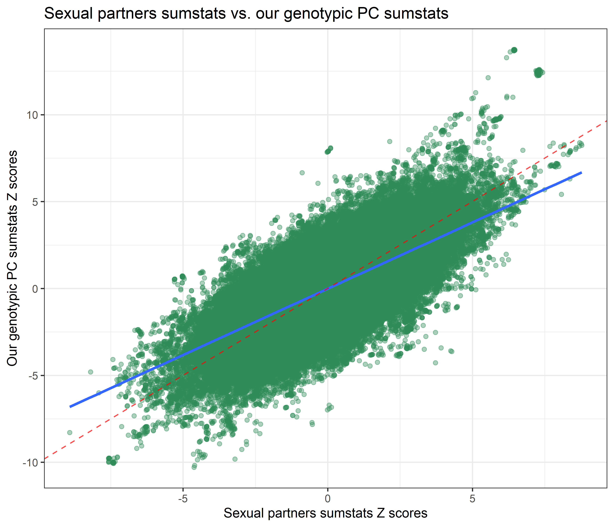

By Anna Elisabeth Fürtjes
anna.furtjes@kcl.ac.uk